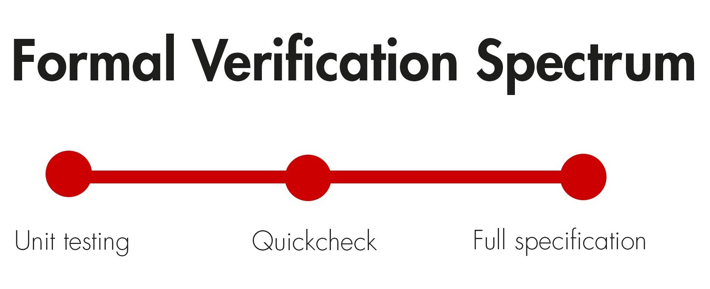

Why do we care about smart contract security?
Fuzz Testing
- An automated software testing technique that involves providing invalid, unexpected, or random data as inputs to a computer program.
Fuzzer classification
- Fuzzers take a set of program inputs and generate new ones automatically. Fuzzers are based on how much information they collect about a program
- Blackbox fuzzer
- Whitebox fuzzer
- Greybox fuzzer
Blackbox fuzzer
- Black-box fuzzers do not collect any information about the program and typically perform random mutations to an input before running the program with it.
- They are easy to implement and can try millions of different inputs within minutes
- However, they struggle with achieving high code coverage for complex code.
Whitebox fuzzer
- White-box fuzzers symbolically execute each instruction run by a given input and use automated solvers (e.g., SMT/SAT solvers) to find new inputs to cover a new execution path.
- Typically, these tools are very effective at covering new paths.
- This is known as the path explosion problem and most fuzzers use heuristic search strategies to cover “interesting paths”.
Greybox fuzzer
- They use light-weight program instrumentation to record the execution path for each tested input and compute its path identifier.
- Many state-of-the-art tools use sophisticated evolutionary algorithms to select which inputs to fuzz.
- Able to achieve high code coverage even for complex code without using more expensive techniques, such as automated solvers, to reason about the program.
Static Analysis
- Static Analysis is performed by reviewing the source code without running the program
- It is mostly for ensuring proper coding standards, best practices, syntax errors, etc
Static Analysis : Remix Plugin

Static Analysis : Remix Plugin

Static Analysis : Remix Plugin
- False Positive on infinite gas for dynamic arrays such as string

Static Analysis : sFuzz
- Adaptive fuzzing strategy to maximize code coverage through multi-objective optimization
- Automatically configures a blockchain network, deploys the smart contract, and generates multiple transactions
given the smart contract.
- The transactions are then executed with an EVM
enriched with a set of oracles for identifying vulnerabilities.
- An extensible static analysis tool for discovering vulnerabilities and other code issues in Ethereum smart contracts written in the Solidity programming language.
Static Analysis : Slither
- low false positives
- Identifies error condition in the source code
- Easily integrates into continuous integration and Truffle builds
- Report crucial contract information
- Detector API to write custom analyses in Python
- Intermediate representation (SlithIR) enables simple, high-precision analyses
- Average execution time of less than 1 second per contract
Static Analysis : Echidna
- Property testing to generate malicious inputs that break smart contracts
- Generates inputs tailored to code
- Optional corpus collection, mutation and coverage guidance to find deeper bugs
- Powered by Slither to extract useful information before the fuzzing campaign
Static Analysis : Echidna
- Automatic testcase minimization for quick triage
- Seamless integration into the development workflow
- Maximum gas usage reporting of the fuzzing campaign
- Support for a complex contract initialization with Etheno and Truffle
Static Analysis : Securify
- Implements novel context-sensitive static analysis written in Datalog
- Analyzes contracts written in Solidity >= 0.5.8
Dynamic Analysis
- Analysis is performed by executing the program
- Unit testing is a type of dynamic analysis
Symbolic Execution
- Symbolic execution performs code path analysis on a program and generates test input to verify program
Formal Verification
- Formal Verification is the process of proving or disproving program correctness with respect to a set of specifications
- Solidity has a built-in module for formal verification
- Enabled by pragma experimental SMTChecker
Formal Verification : Spectrum

Formal Verification : Spectrum
- Unit testing : program verification through input combination
- Quickcheck : generate 1000s of test cases
- Full Specification : generate mathematical proof
Formal Verification
- Sourcify - verify bytecode to sourcecode
- SMTChecker - SMT based formal verification module
- Scribble - Runtime verification tool
- Pact - Z3 based formal verification tool cum SC language
SMTChecker
- Arithmetic underflow and overflow (underflow and overflow).
- Division by zero (divByZero).
- Trivial conditions and unreachable code (constantCondition).
- Popping an empty array (popEmptyArray).
- Insufficient funds for a transfer (balance).
Limitations
- All tools still have limitations
- Not all vulnerabilities can be found by analysis
- Not scalable to large or complex programs
- Still need to do manual auditing and testing
References : Formal Verification
References : Static Analysis